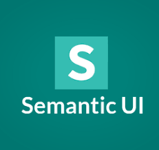
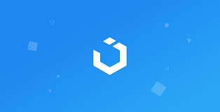
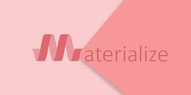
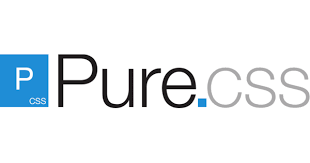
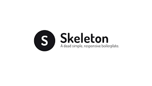

Bootstrap
Rizka Ma'rifatul -
 Bootstrap pertama kali diciptakan oleh salah satu desainer dan developer Twitter di tahun 2011. Hingga saat ini, framework ini masih jadi yang paling populer daripada framework lainnya. Banyak developer yang menggunakan Bootstrap karena menawarkan banyak fungsi dan elemen desain yang responsif.
Bootstrap pertama kali diciptakan oleh salah satu desainer dan developer Twitter di tahun 2011. Hingga saat ini, framework ini masih jadi yang paling populer daripada framework lainnya. Banyak developer yang menggunakan Bootstrap karena menawarkan banyak fungsi dan elemen desain yang responsif.
Bootstrap juga menjadi framework pertama yang meluncurkan filosofi “Mobile-First”. Filosofi ini muncul mengingat tingginya jumlah pengguna mobile. Apapun jenis elemen yang dipilih, hasilnya akan otomatis menyesuaikan ukuran layar handphone.
Apalagi di tahun 2018, Bootstrap telah mengupgrade versi ke empat (4.0) mereka dengan segudang tambahan fitur. Mulai dari skema warna baru, kelas, sistem grid, layout modern dan sebagainya. Untuk inspirasi, Bootstrap juga menampilkan jejeran contoh desain dari aneka aplikasi dan website.
Intinya dengan framework ini, Anda bisa dengan mudah mendesain aplikasi atau website yang menarik.
Fitur unggulan:
1. Desain responsif. Menawarkan sistem grid yang powerful untuk desain responsif, cepat, dan mudah.
2. Kaya akan fitur. Memiliki banyak fitur untuk kebutuhan front-end. Mulai dari layout, website template, tema, panel admin, dan banyak koleksi komponen user interface (UI). Ada juga aneka model desain untuk tombol, formulir, kartu, notifikasi yang semuanya bisa menghemat waktu tim desainer Anda.
3. Cocok untuk pemula. Bootstrap sudah memfasilitasi Anda dengan banyak tutorial dan guideline yang mudah diikuti.
4. Memiliki komunitas developer yang besar. Karena diciptakan oleh salah satu developer Twitter dan bersifat open-source, Bootstrap memiliki komunitas developer yang luas.
5. Didukung dengan LESS dan SASS. Bootstrap menjadi salah satu framework CSS yang mendukung LESS dan SASS. Keduanya merupakan bahasa pra-prosesor yang memudahkan Anda untuk menulis kode CSS dengan rapi dan terstruktur.
6. Flexbox. Model layout yang berguna untuk mengatur elemen suatu website atau aplikasi. Bertujuan agar Anda bisa mengatur panjang, lebar, dan posisi setiap elemen supaya tidak berhimpit satu dengan yang lainnya.
Foundation
Rizka Ma'rifatul -
 Fitur unggulan:
Fitur unggulan:
1. Desain yang responsif. Foundation menganut sistem yang memudahkan Anda untuk memiliki desain front-end yang responsif. Baik untuk website, aplikasi, dan email dengan optimasi yang maksimal di berbagai perangkat.
2. Framework email yang mumpuni. Foundation menawarkan framework untuk pembuatan email secara sederhana dengan tampilan yang berkelas.
3. Unlimited support dan update. Foundation selalu memberikan bantuan secara penuh bila Anda mengalami kesulitan. Itulah sebabnya, Zurb — perusahaan di balik Foundation — sering mengadakan online seminar secara gratis. Anda bisa memperoleh aneka tips tentang membangun website atau aplikasi yang berkualitas.
4. Mudah untuk kustomisasi. Foundation tidak membatasi Anda untuk menciptakan fitur atau elemen tambahan pada komponen UI. Sehingga Anda dapat mengcustom-nya sebebas mungkin.
Bulma
Rizka Ma'rifatul -
 Fitur unggul:
Fitur unggul:
1. CSS class yang mudah terbaca. Bulma memfasilitasi Anda dengan CSS class yang mudah terbaca dan komponen yang siap pakai dengan interface yang mobile-friendly. Sistemnya juga sangat powerful untuk menciptakan desain yang kompleks, namun dengan pengembangan yang tidak rumit.
2. Murni CSS tanpa JavaScript. Bulma diciptakan murni dengan CSS. Artinya, ketika Anda menggunakan framework ini, Anda hanya perlu satu file .css tanpa memerlukan file .js. Meski begitu, Bulma tidak membatasi Anda untuk membuat komponen kustom melalui modifier classes yang mudah.
3. Komunitas yang besar. Tak perlu cemas bila Anda adalah seorang pemula. Sebab, Bulma memiliki komunitas yang cukup besar sehingga Anda bisa menjangkau pengembang lainnya bila membutuhkan bantuan.
4. Berbasis flexbox. Sistem layouting untuk mengatur elemen box secara fleksibel.
5. Didukung dengan SASS. Untuk mempermudah pengkodean dengan CSS.
Semantic UI
Rizka Ma'rifatul -

Semantic UI adalah salah satu framework CSS yang fokus kepada penggunaan human-friendly HTML. Human-friendly HTML memudahkan developer pemula membangun desain front-end kekinian. Selain itu, framework ini juga kaya akan fitur dan elemen desain yang responsif.
Fitur unggul:
1. Penulisan class yang mudah. Karena menganut human-friendly HTML, Anda bisa mengembangkan penulisan dan mengingat setiap class secara mudah.
2. Kaya akan variabel tema dan komponen UI. Semantic UI mempunyai ribuan pilihan variabel tema dan komponen UI yang responsif. Bahkan, secara default elemen mereka sudah terlihat sangat apik dibanding milik Bootstrap.
3. Kode JavaScript yang intuitif. Kode sangat mudah dipahami sehingga tidak terlalu sulit untuk dikembangkan.
UIKit
Rizka Ma'rifatul -

Anda menginginkan desain yang serba minimalis? Namun tetap membuatnya terlihat berkelas? UIKit bisa menjadi pilihan yang tepat.
UIKit hadir sebagai framework CSS yang ringan dalam pengembangannya. Meski begitu, UIKit memiliki elemen maupun fitur yang tak kalah saing dengan framework unggul lain.
UIKit populer dengan deretan desainnya yang simpel, minimalis dan elegan. Anda bisa membuat interface dengan set ikon SVG, komponen yang lengkap, style yang modern, dan mudah dikustomisasi.
Bila menginginkan desain front-end yang lebih kompleks, UIKit menyediakan layout berbasis flexbox. Ini membuat hasil keseluruhan desain Anda akan nampak rapi meski hanya menggunakan HTML biasa.
Fitur keunggulan:
1. Minimalis. UIKit membantu para developer agar mendapatkan desain front-end yang modern dan bersih.
2. Komponen yang lengkap. UIKit menawarkan komponen pre-built mulai dari Accordion, Alert, Drop, Iconnav, animations, Padding, dan lain-lain. Masing-masingnya akan menampilkan fungsi setiap komponen secara detail.
3. Kustomisasi ikon. Anda bisa bebas mengotak-atik setiap ikon sesuai kebutuhan.
4. Dukungan LESS dan SASS. Proses pengembangan CSS akan lebih mudah dan terstruktur.
5. Bekerja optimal di segala browser. Apapun browser yang digunakan, aplikasi atau website Anda akan tetap berjalan dengan maksimal.
Materialialize CSS
Rizka Ma'rifatul -

Framework CSS terbaik berikutnya adalah Materialize CSS. Framework kenamaan ini dirancang oleh perusahaan teknologi raksasa yaitu Google. Kebanyakan, para pengembang menggunakan Materialize CSS untuk mendesain website atau aplikasi Android. Ini berkat perpaduannya CSS-nya yang cerdas dengan desain yang estetika.
Lebih dari itu, framework ini juga menyediakan komponen JavaScript, HTML, dan CSS. Ini pula yang menjadikannya mampu bekerja secara responsif dan minim isu saat melakukan pengujian kompatibilitas pada browser.
Tak perlu lagi pikir panjang bila Anda mendambakan sebuah desain UI yang berkelas. Tinggal gunakan saja Framework Materialize CSS, Anda akan segera mendapatkan elemen dan fitur berkualitas.
Fitur unggul:
1. Banyak fitur built-in. Framework ini menawarkan ragam fitur bawaan yang dinamis, mudah digunakan, modern, flow text, parallax element, dan masih banyak lagi.
2. Meminimalisir waktu coding. Saking banyaknya fitur unggul yang dibawakan oleh Materizalie, waktu coding Anda bisa jauh lebih singkat.
3. Banyak plugin unggul. Materialize juga menawarkan banyak pilihan plugins untuk mengembangkan UI pada website atau aplikasi Anda.
4. Panduan yang lengkap. Materialize CSS sudah menyediakan dokumentasi dan guidelines lengkap agar Anda lebih menguasai segala hal yang berkaitan dengan UI pada front-end.
5. Kompatibel dan responsif di segala browser dan perangkat.
Milligram
Rizka Ma'rifatul -
 Milligram adalah salah satu framework CSS ringan yang dapat membantu Anda mendesain website atau aplikasi yang cepat dan bersih. Beratnya hanya mencapai 2KB (gzip).
Milligram adalah salah satu framework CSS ringan yang dapat membantu Anda mendesain website atau aplikasi yang cepat dan bersih. Beratnya hanya mencapai 2KB (gzip).
Meskipun ukurannya kecil, Milligram hadir dengan seperangkat alat pengembangan yang lengkap. Anda juga dapat menggunakan semua fitur yang ditawarkan dengan spesifikasi CSS3. Ini dapat mendukung struktur desain front-end menjadi teratur dan seragam satu sama lainnya.
Intinya, bila Anda ingin framework dengan pengembangan yang mudah dan ringan, Milligram adalah solusinya.
Fitur unggul:
1.Flexbox grid. Penataan antar elemen bisa lebih rapi dan sejajar.
2.Bekerja secara responsif dan kompatibel untuk segala perangkat dan browser.
3. Memiliki banyak variabel tema yang minimalis.
PureCSS
Rizka Ma'rifatul -

Ada lagi Semantic UI, salah PureCSS menampilkan rangkaian modul CSS yang ideal untuk berbagai jenis proyek Anda. Meskipun kapasitasnya kecil, yakni berkisar 3.7 KB, kinerjanya masih sangat responsif. Hasilnya, Anda dapat dengan mudah membuat website atau aplikasi yang cepat dan estetis.
Sekedar informasi, framework ini dibuat oleh Yahoo di tahun 2104. Anda bisa menikmati banyak fitur menonjol serta komponen built-in yang mudah untuk dikembangkan. Sehingga bila Anda yang masih pemula, Pure bisa menjadi tempat yang tepat untuk Anda mendalami framework CSS.
Fitur unggul:
1. Dibangun dengan normalize.css. Menjadikan penataan layout dan styling elemen HTML tidak ribet.
2. Pengembangan yang mudah.
3. Responsif di segala perangkat dan browser.
Skeleton
Rizka Ma'rifatul -

CSS framework kesembilan ini memang berbeda dari kebanyakan framework lainnya. Skeleton merupakan framework CSS yang hanya memiliki 400 baris jenis kode.
Meskipun jumlahnya begitu sedikit, Anda bisa menciptakan desain kompleks dengan hasil yang responsif di segala perangkat. Anda bisa menemukan berbagai elemen yang juga ditemukan pada framework CSS pada umumnya. Misalnya, grid, tipografi, tombol, formulir, list, tabel, dan sebagainya.
Itulah sebabnya, Skeleton lebih sering digunakan developer saat mengerjakan proyek kecil dengan hasil maksimal. Skeleton juga bisa jadi pilihan bagi pemula yang ingin mempelajari framework CSS.
Fitur unggulan:
1. Menyediakan 400 baris jenis kode dengan elemen lengkap.
2. Optimal di segala perangkat.
Tailwind
Rizka Ma'rifatul -
 Tailwind menjadi framework CSS yang bisa Anda andalkan untuk menciptakan UI yang cepat dan praktis. CSS libraries milik Tailwind sangat mudah dikustomisasi. Jadi, Anda bisa leluasa menciptakan desain seunik mungkin.
Tailwind menjadi framework CSS yang bisa Anda andalkan untuk menciptakan UI yang cepat dan praktis. CSS libraries milik Tailwind sangat mudah dikustomisasi. Jadi, Anda bisa leluasa menciptakan desain seunik mungkin.
Fitur unggulan:
1. Mudah untuk kustomisasi. Tailwind ditulis dengan PostCSS dan dikonfigurasi dengan JavaScript. Ini akan memberikan Anda fleksibilitas pada kustomisasi desain UI. Mulai dari dari penetapan warna, ukuran pembatas, ukuran font, breakpoints, dan elemen lainnya.
2. Utility classes. Tailwind lebih fokus pada penggunaan classes yang memungkinkan Anda membangun front-end yang tidak pasaran.
3. Fleksibel Flexbox. Fleksibilitas untuk mengatur setiap layout dan elemen yang sejajar dan tertata.
4. Menghasilkan desain yang responsif di berbagai gawai apa pun.